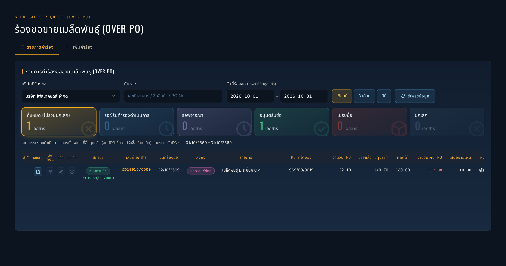
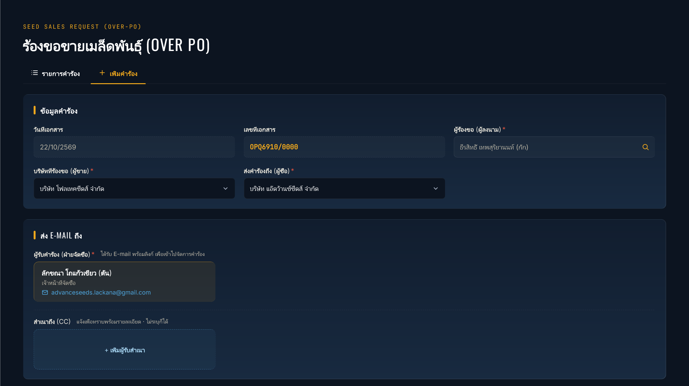
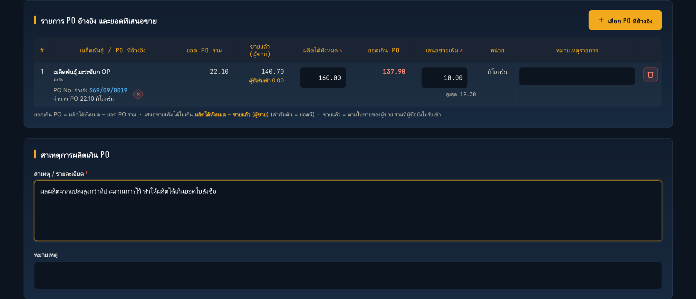
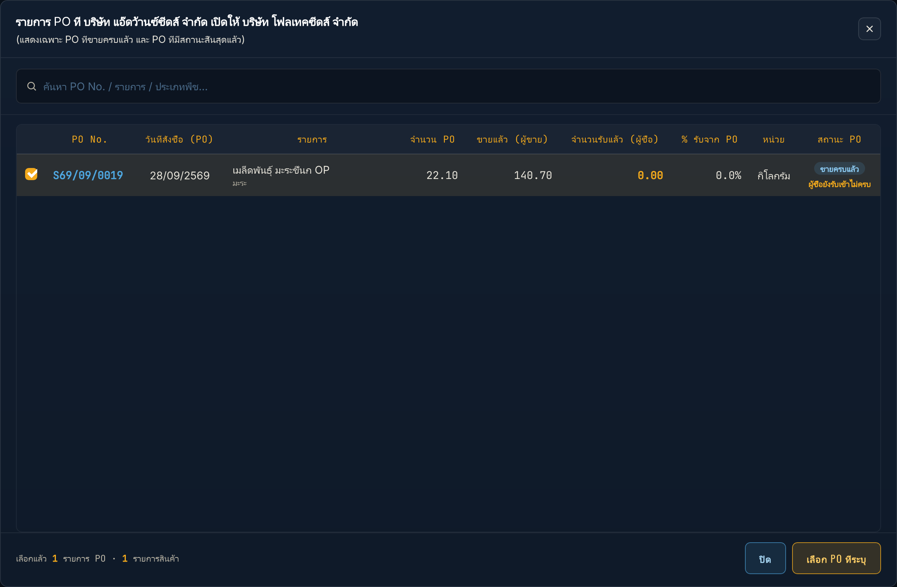
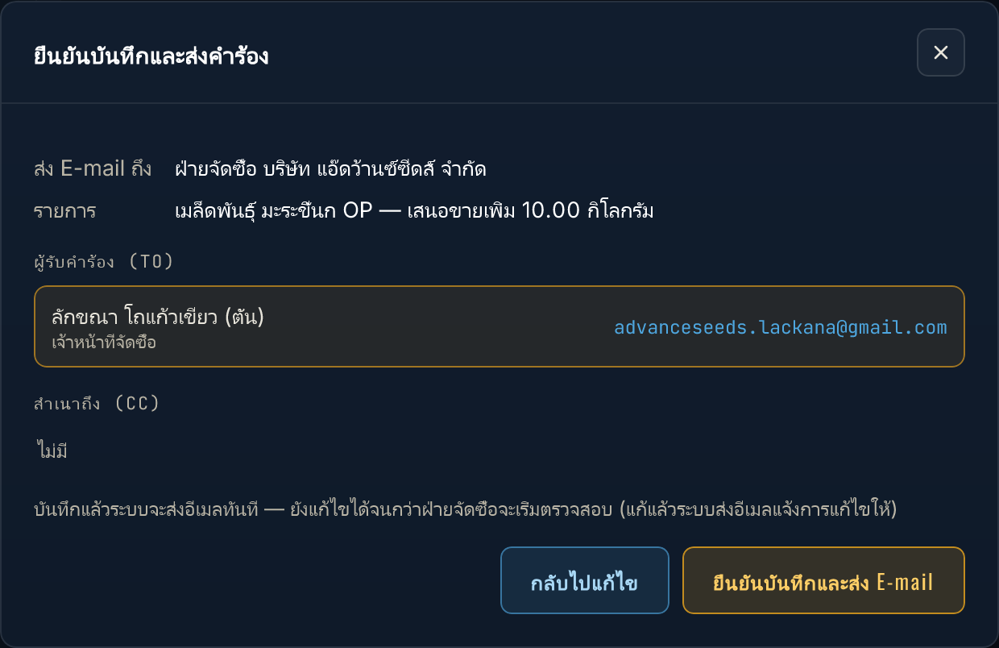
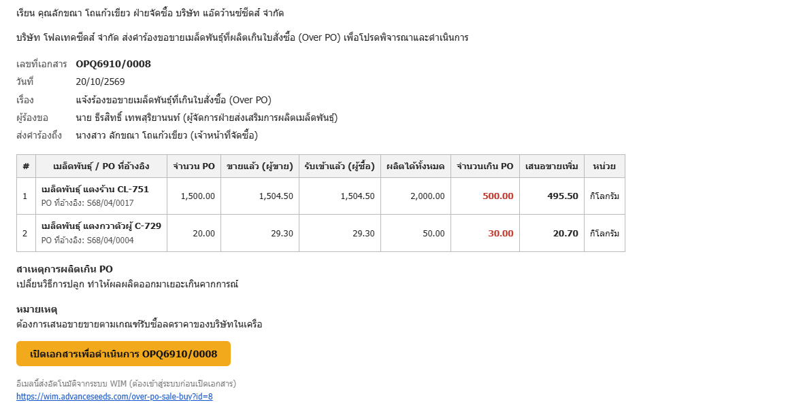
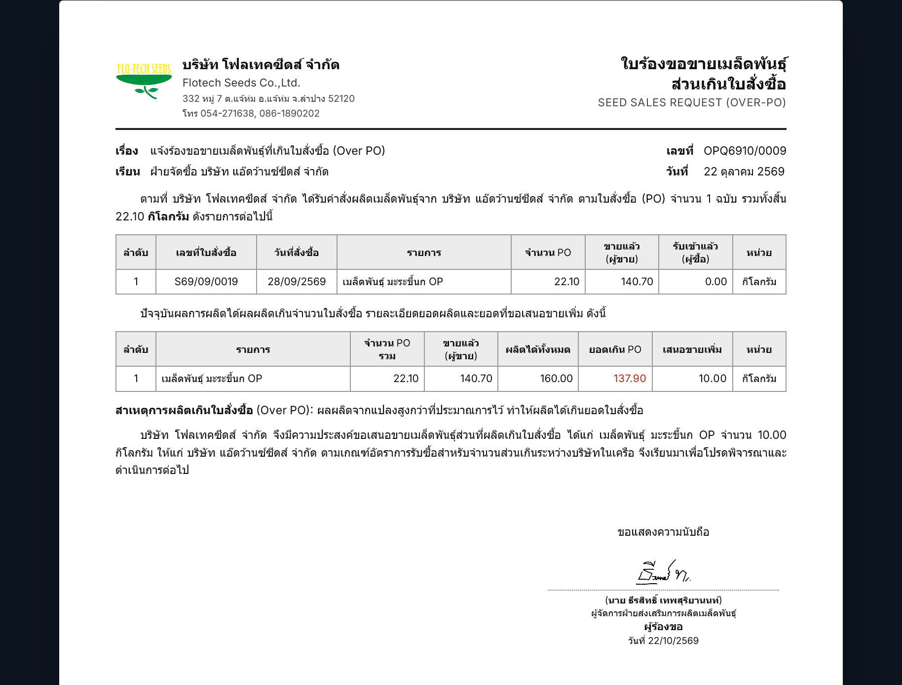

ภาพรวมการทำงาน
เมื่อบริษัทผู้ขาย ผลิตเมล็ดพันธุ์ได้เกินจำนวนในใบสั่งซื้อ (PO) ของบริษัทผู้ซื้อ และต้องการเสนอขายส่วนที่เกิน ผู้ร้องขอบันทึกคำร้องในระบบ แล้วระบบส่งอีเมลถึงฝ่ายจัดซื้อให้พิจารณา
เข้าสู่เมนูและส่วนประกอบของหน้า
เปิดเมนู คำร้องขอ › ร้องขอขายเมล็ดพันธุ์ (Over PO) › แจ้งคำร้องขอขาย หน้านี้มี 2 แท็บ: รายการคำร้อง (ดูและติดตาม) และ เพิ่มคำร้อง (สร้างคำร้องใหม่)

- บริษัทที่ร้องขอ เลือกได้เฉพาะบริษัทที่คุณมีสิทธิ์
- การ์ดสรุปสถานะ (ทั้งหมด / รอผู้รับคำร้องดำเนินการ / รอพิจารณา / อนุมัติรับซื้อ / ไม่รับซื้อ / ยกเลิก) กดเพื่อกรองรายการ
- วันที่ร้องขอ ใช้กับรายการที่สิ้นสุดแล้ว เลือก เดือนนี้ / 3 เดือน / ปีนี้ หรือกำหนดช่วงเอง รายการที่ยังระหว่างดำเนินการแสดงเสมอ
- ปุ่ม ดูเอกสาร เปิดใบร้องขอ (OPQ) รายละเอียด ดูข้อมูลและความคืบหน้า
สร้างคำร้อง
กดแท็บ เพิ่มคำร้อง แล้วกรอกตามลำดับ


- บริษัทที่ร้องขอ (ผู้ขาย) เลือกบริษัทของคุณ และ ส่งคำร้องถึง (ผู้ซื้อ) เลือกบริษัทที่เป็นผู้ซื้อตาม PO เลขที่เอกสาร (OPQ…) ระบบออกให้เอง
- กด เลือก PO ติ๊กเลือก PO ที่ต้องการอ้างอิง (เลือกได้หลายใบ ถ้าเป็นสินค้าเดียวกัน ระบบรวมยอดให้) ถ้า PO ใดเคยถูกอ้างอิงในคำร้องอื่นแล้ว จะมีป้ายเตือน

หน้าต่างเลือก PO - ในตารางรายการ ระบบแสดง ยอด PO รวม และ ขายแล้ว (ผู้ขาย) ให้ คุณกรอก ผลิตได้ทั้งหมด ระบบคำนวณ ยอดเกิน PO แล้วกรอก เสนอขายเพิ่ม ซึ่งต้องไม่เกิน ผลิตได้ทั้งหมด − ขายแล้ว (ช่องแสดง "สูงสุด" ให้ดู)
- กรอก สาเหตุการผลิตเกิน PO (จำเป็น) ส่วน หมายเหตุ ไม่บังคับ
- ถ้าต้องการส่งสำเนาถึงคนอื่น กด เพิ่มผู้รับสำเนา (CC)
บันทึกและส่งคำร้อง
กด บันทึกและส่งคำร้อง ระบบจะแสดงหน้าต่างยืนยัน บอกว่าอีเมลจะไปถึงใคร (TO / CC) และรายการที่เสนอขาย ตรวจแล้วกด ยืนยันบันทึกและส่ง E-mail

หลังบันทึก ระบบส่งอีเมลถึงฝ่ายจัดซื้อทันที หน้าตาอีเมลที่ฝ่ายจัดซื้อได้รับ:

ใบร้องขอ (OPQ) พิมพ์ แก้ไข ยกเลิก
กด ดูเอกสาร ในรายการเพื่อเปิดใบร้องขอแบบเต็มหน้า A4 และพิมพ์ได้ (เอกสารนี้ถูกแนบไปให้ฝ่ายจัดซื้อและผู้อนุมัติด้วย)

- แก้ไข: ใช้ได้ตอนสถานะ รอผู้รับคำร้องดำเนินการ ระบบเปิดฟอร์มเดิมให้แก้แล้วบันทึกใหม่
- ยกเลิก: ระบุสาเหตุ เอกสารเปลี่ยนเป็นสถานะ ยกเลิก (เก็บประวัติไว้ ไม่ถูกลบ)
- ถ้าฝ่ายจัดซื้อ ส่งกลับแก้ไข ผู้ร้องขอจะได้อีเมล แก้ไขตามเหตุผลแล้วบันทึกส่งใหม่
ผลการพิจารณา
เมื่อผู้อนุมัติครบทั้ง 4 ท่าน ระบบแจ้งผลทางอีเมล และในหน้ารายการสถานะเปลี่ยนเป็น อนุมัติรับซื้อ พร้อมแสดงเลข PO ที่ออกให้ (OS…) ถ้าฝ่ายจัดซื้อหรือผู้อนุมัติเลือก ไม่รับซื้อ สถานะเป็น ไม่รับซื้อ และแสดงเหตุผล (กดรายละเอียดเพื่ออ่าน)
ความหมายของสถานะ
| สถานะ | ความหมาย | ผู้ร้องขอทำอะไรได้ |
|---|---|---|
| รอผู้รับคำร้องดำเนินการ | ส่งอีเมลถึงฝ่ายจัดซื้อแล้ว ยังไม่เริ่มพิจารณา | แก้ไข / ยกเลิก / พิมพ์ |
| รอพิจารณา | ฝ่ายจัดซื้อกำลังพิจารณา หรืออยู่ระหว่างขออนุมัติ 4 ขั้น | ดูความคืบหน้า / พิมพ์ |
| อนุมัติรับซื้อ | อนุมัติครบ ระบบออก PO และใบสั่งขายแล้ว | ดูเลข PO ที่ออกให้ |
| ไม่รับซื้อ | ฝ่ายจัดซื้อหรือผู้อนุมัติไม่รับซื้อ (มีเหตุผล) | อ่านเหตุผล |
| ยกเลิก | ผู้ร้องขอยกเลิกเอง | ดูประวัติ |
คำถามที่พบบ่อยและการแก้ปัญหา
กรอก "เสนอขายเพิ่ม" แล้วขึ้นว่าเกินจำนวนสูงสุด
เสนอขายเพิ่มต้องไม่เกิน ผลิตได้ทั้งหมด − ขายแล้ว (ผู้ขาย) ตรวจว่ากรอกยอดผลิตได้ทั้งหมดเป็นจำนวนรวมของทั้งปี/ล็อตที่ถูกต้อง และ "ขายแล้ว" ตรงกับที่ขายไปจริงหรือไม่
หา PO ที่ต้องการไม่เจอ
ในหน้าต่างเลือก PO ลองค้นหาด้วยเลข PO หรือชื่อสินค้า และตรวจว่าเลือก บริษัทที่ร้องขอ และ ส่งคำร้องถึง ถูกคู่กัน (PO ต้องเป็นของบริษัทผู้ซื้อ โดยมีบริษัทของคุณเป็นผู้ขาย)
ฝ่ายจัดซื้อบอกไม่ได้รับอีเมล
ระบบส่งอีเมลเบื้องหลังหลังบันทึก (ใช้เวลาไม่กี่วินาทีถึงประมาณ 1 นาที ถ้าส่งไม่สำเร็จจะลองใหม่เองและแจ้งเตือนในหน้ารายการ) ให้ฝ่ายจัดซื้อตรวจกล่องขยะ (Junk / Spam) ก่อน อีเมลครั้งแรกจากระบบมักเข้ากล่องนี้ ให้กด "ไม่ใช่ขยะ" (Not junk) อีเมลถัดไปจะเข้ากล่องหลัก ถ้ายังไม่พบ กด ส่งอีเมลคำร้องอีกครั้ง หรือกด ดูเอกสาร จากหน้ารายการเพื่อส่งลิงก์ให้โดยตรง ถ้าผู้รับไม่ถูกต้อง แจ้งผู้ดูแลระบบให้ปรับสิทธิ์กำหนดผู้รับอีเมล
ต้องการแก้คำร้องหลังฝ่ายจัดซื้อเริ่มพิจารณาแล้ว
แก้ไขเองไม่ได้ ให้ติดต่อฝ่ายจัดซื้อให้กด ส่งกลับแก้ไข แล้วผู้ร้องขอจะแก้ไขและส่งใหม่ได้